CS172 · Computer Vision I
Jiayuan Gu
ShanghaiTech University
Learning with spatial structure
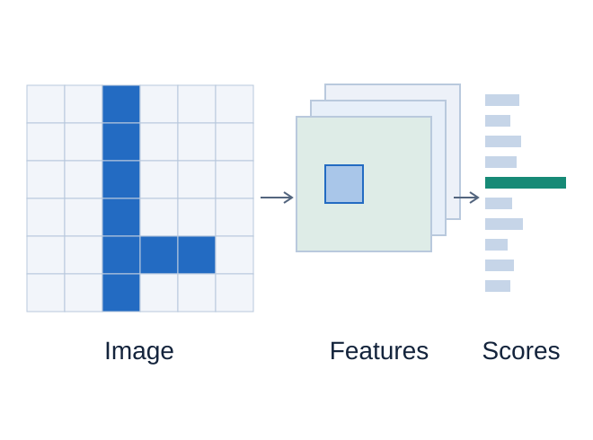
CS172 · Computer Vision I
Jiayuan Gu
ShanghaiTech University
Learning with spatial structure

An RGB image has shape
Flattening retains every pixel value.
A dense layer does not enforce which pixels are neighbors.
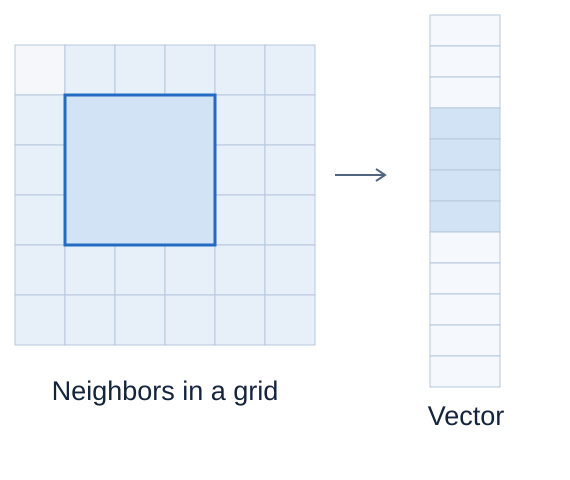
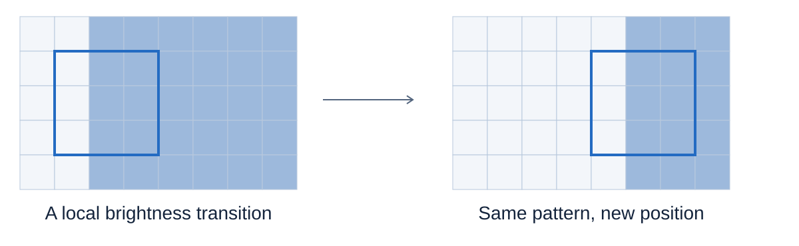
Reuse one local detector across the image.
Each output reads a small spatial neighborhood.
The same filter is applied at every spatial position.
Inductive bias: an assumption built into the model’s structure.
A kernel (filter) is a small array of learned weights.
A patch’s dot product with the kernel, plus a learned offset (bias), gives one response.
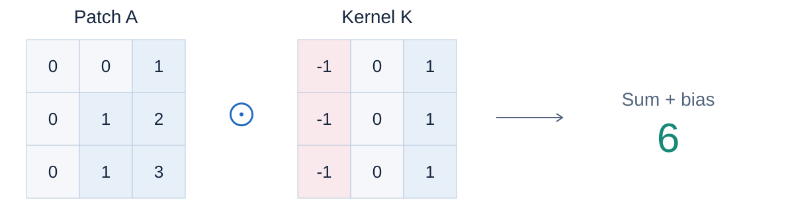
Here
Input
One-pixel steps · bias 0
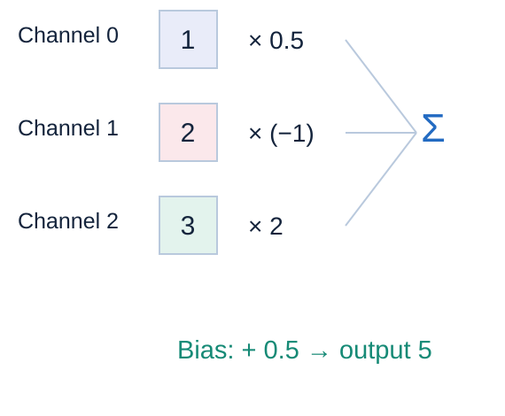
An input channel is one image plane, such as red.
A standard filter sums across all input channels, then adds one bias.
A
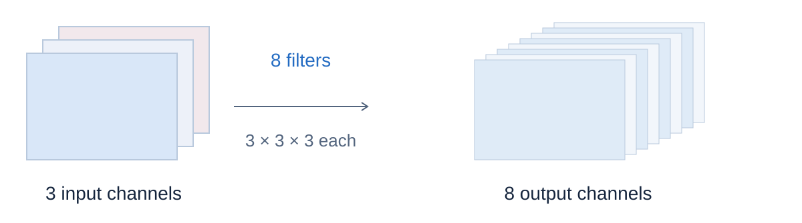
| Input | Weights | Bias | Output |
|---|---|---|---|
Tensor: a multidimensional array. Feature map: one output channel. Activations: computed values.
NCHW: batch size, channels, height, width.
One
Deep-learning “convolution” usually computes cross-correlation: the kernel is not flipped.
Gradient arriving from later layers:
Backpropagation sums contributions from every use of a shared parameter.
ReLU (rectified linear unit) clips negative values to zero.
ReLU preserves tensor shape.
Without nonlinearities, stacked weighted sums still form one weighted sum.
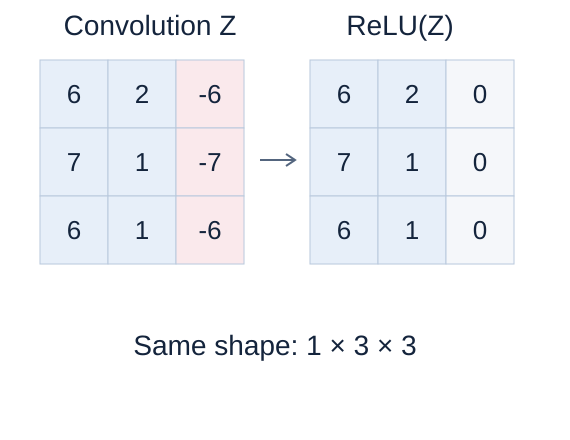
Kernel size and step size determine the output shape and the amount of computation.
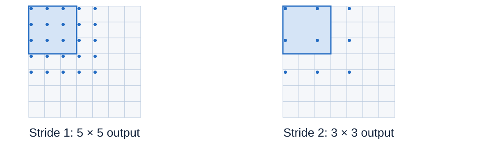
Stride
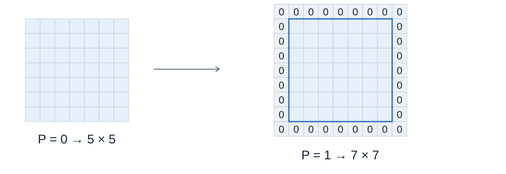
Zero padding: add
For odd
Floor
Starts
Still starts
Fixed
Input:
16 filters ·
Weights:
Output:
Parameters:
Batch size
Same input
| Connections | Parameters, including bias |
|---|---|
| Fully connected | |
| Local | |
| Local |
All three layers produce 8,192 output values. Padding 1 for local layers.
MAC = multiply–accumulate. Multiply two numbers, then add the product to a running sum.
Each output uses
One image:
224 learned parameters; 221,184 MACs per image. Bias additions are excluded.
Stacking layers combines local evidence. Downsampling reduces spatial resolution so later filters cover larger input regions.
Receptive field: the input region that can affect one output.
Every layer:
| Layer | |||
|---|---|---|---|
| Input | — | 1 | 1 |
| Conv → max pool | 3,1 → 2,2 | 3 → 4 | 1 → 2 |
| Conv → max pool | 3,1 → 2,2 | 8 → 10 | 2 → 4 |
The second
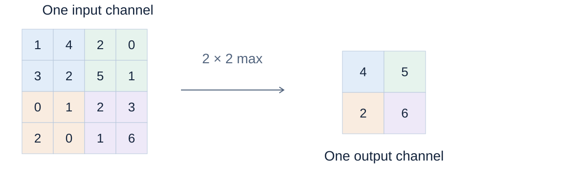
Max: keep the strongest response.
Average: summarize the mean response.
No learned weights; channel count stays fixed.
Shift the input; the feature map shifts.
Stride-1 convolution on an infinite grid, or away from affected boundaries.
Shift the input; the output stays the same.
An additional property, not implied by sharing.
Max pool,
Shift right one pixel:
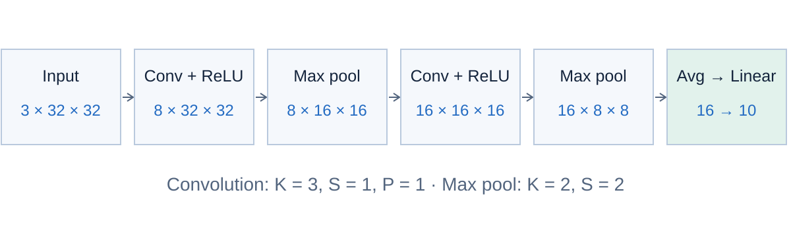
Global average pooling: average each final
The classification head maps 16 features to 10 logits (unnormalized class scores).
| Layer | Output (batch axis omitted) | Parameters |
|---|---|---|
| Input | 0 | |
| Conv | 224 | |
| Max pool | 0 | |
| Conv | 1,168 | |
| Max pool | 0 | |
| Global average → Linear | 170 |
Total: 1,562 parameters, including biases. Conv stride is 1.
import torch
from torch import nn
model = nn.Sequential(
nn.Conv2d(3, 8, 3, padding=1), nn.ReLU(),
nn.MaxPool2d(2),
nn.Conv2d(8, 16, 3, padding=1), nn.ReLU(),
nn.MaxPool2d(2),
nn.AdaptiveAvgPool2d(1), nn.Flatten(1),
nn.Linear(16, 10),
)
x = torch.randn(4, 3, 32, 32)
assert model(x).shape == (4, 10)optimizer = torch.optim.SGD(model.parameters(), lr=0.01) criterion = nn.CrossEntropyLoss() model.train() # One synthetic batch: class indices 0, 1, 2, 3 target = torch.tensor([0, 1, 2, 3], dtype=torch.long) optimizer.zero_grad() logits = model(x) # shape: (4, 10) loss = criterion(logits, target) loss.backward() optimizer.step()
CrossEntropyLoss takes raw class scores and handles probability normalization internally.
images.shape # (4, 32, 32, 3) nn.Conv2d(3, 8, 3)(images)
Conv2d expects channels in axis 1.
Move the last axis to axis 1:
images.permute(0, 3, 1, 2) # (4, 3, 32, 32)
features.shape # (4, 16, 8, 8) features.flatten(1) # (4, 1024)
A 16-feature head cannot take 1,024 values.
Average each map before flattening:
nn.AdaptiveAvgPool2d(1) # (4, 16, 1, 1) → (4, 16)
Input
Output shape and parameter count?
Two
Does weight sharing imply translation invariance?
No. A shift can move the feature map; strided pooling can change which window captures a feature.
Convolution, spatial dimensions, computational cost, and pooling.
Locality, sharing, padding, channels, and pooling.
Input/output shapes and loss-function usage.
Receptive-field derivations and alignment.